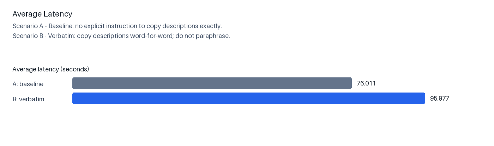
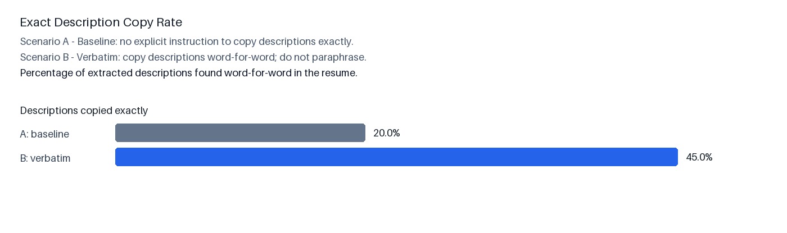

Primary evidence: source-grounded fidelity. Exact copying and best local word alignment are measured against OCR text from the resume itself. Gold-description cosine is shown only as a diagnostic because the existing gold descriptions are known to be incomplete or inconsistent.


| prompt_version | latency_seconds | descriptions_returned | gold_description_count | description_count_recall | exact_source_rate | source_window_cosine | source_window_word_f1 | source_fidelity_score | gold_cosine_diagnostic | gold_word_f1_diagnostic | description_score |
|---|---|---|---|---|---|---|---|---|---|---|---|
| v001 | 76.011 | 1.800 | 2.800 | 0.600 | 0.200 | 0.567 | 0.527 | 0.374 | 0.384 | 0.282 | 0.442 |
| v002 | 95.977 | 1.800 | 2.800 | 0.600 | 0.450 | 0.596 | 0.589 | 0.521 | 0.379 | 0.265 | 0.545 |
| resume_id | prompt_version | model | latency_seconds | descriptions_returned | gold_description_count | description_count_recall | exact_source_rate | source_window_cosine | source_window_word_f1 | source_fidelity_score | gold_cosine_diagnostic | gold_word_f1_diagnostic | description_score |
|---|---|---|---|---|---|---|---|---|---|---|---|---|---|
| sap_developer__Image_100 | v001 | gemma-4-31b-it | 81.904 | 0 | 1 | 0.000 | 0.000 | 0.000 | 0.000 | 0.000 | 0.000 | 0.000 | 0.000 |
| sap_developer__Image_100 | v002 | gemma-4-31b-it | 44.960 | 0 | 1 | 0.000 | 0.000 | 0.000 | 0.000 | 0.000 | 0.000 | 0.000 | 0.000 |
| network_security_engineer__3271dd46520c65b9 | v001 | gemma-4-31b-it | 68.292 | 2 | 2 | 1.000 | 1.000 | 0.990 | 0.979 | 0.992 | 0.455 | 0.323 | 0.995 |
| network_security_engineer__3271dd46520c65b9 | v002 | gemma-4-31b-it | 65.946 | 2 | 2 | 1.000 | 1.000 | 0.990 | 0.979 | 0.992 | 0.455 | 0.323 | 0.995 |
| sql_developer__0b8431fc6fb166a7 | v001 | gemma-4-31b-it | 69.634 | 3 | 3 | 1.000 | 0.000 | 0.955 | 0.935 | 0.472 | 0.929 | 0.874 | 0.631 |
| sql_developer__0b8431fc6fb166a7 | v002 | gemma-4-31b-it | 105.339 | 3 | 3 | 1.000 | 1.000 | 0.996 | 0.993 | 0.997 | 0.940 | 0.891 | 0.998 |
| python_developer__67 | v001 | gemma-4-31b-it | 112.363 | 4 | 4 | 1.000 | 0.000 | 0.890 | 0.724 | 0.403 | 0.537 | 0.213 | 0.582 |
| python_developer__67 | v002 | gemma-4-31b-it | 212.441 | 4 | 4 | 1.000 | 0.250 | 0.993 | 0.974 | 0.617 | 0.502 | 0.114 | 0.732 |
| data_science__Image_50 | v001 | gemma-4-31b-it | 47.862 | 0 | 4 | 0.000 | 0.000 | 0.000 | 0.000 | 0.000 | 0.000 | 0.000 | 0.000 |
| data_science__Image_50 | v002 | gemma-4-31b-it | 51.200 | 0 | 4 | 0.000 | 0.000 | 0.000 | 0.000 | 0.000 | 0.000 | 0.000 | 0.000 |